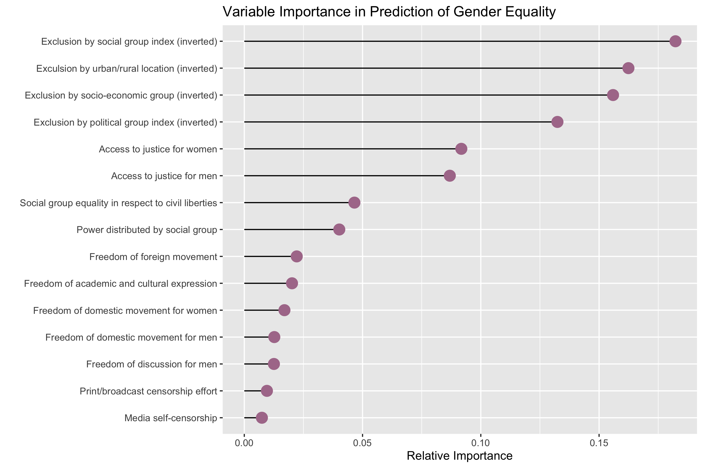

Motivation
Last semester I took a class on religious freedom and became super intrigued with the content. Inevitably, a class like that spurred lots of conversations about democracy on the international stage. My professor made claims such as "all of freedoms flow from religious liberty." We researched and discussed many examples of gender inequality. Discussions such as these made me very curious about the state of international freedom. When I discovered the Global State of Democracy Index, I immediately knew I wanted to dig into it and see if helpful visualizations or models could answer some of the questions I'd been contemplating.
Dataset
The Global State of Democracy Index (the GSoDi):
- measures 29 aspects of democracy
- has data from 1975-2019 (inclusive)
- covers 163 countries
- quantifies each feature in the dataset on a scale from 0 to 1, where 1 is always the most democratic response
- is an aggregation of data from multiple sources, gathered and standardized by the International Institute for Democracy and Electoral Assistance (IDEA)
Analysis
Comparative Measure of Democracy
One distinctive of the GSoDi is lack of an aggregate measure present. Though they had their reasons for excluding such an aggregation, I do think this index can provide some valuable insight if we create one. For the purposes of this project, I used k-means clustering to identify a relative measure of democracy using the most recently available data. In this model, countries were ranked on a sliding scale from 1 (most democratic) to 5 (least democratic).

Predictors of Gender Equality
As I alluded to previously, one of my main fascinations with this dataset was all of the information related to gender equality. I wanted to see if we could identify indicators that commonly predicted gender equality. To investigate this, I used decision tree analysis to narrow down which indicators in the GSoDi were most important for predicting the level of gender equality. The analysis yielded the following as the most important variables.
Freedom of Religion and Other Fundamental Rights
One of the reasons I was originally interested in this dataset was to evaluate a claim made by one of my professors: that religious freedom was an indicator of all other rights, and a decline in religious freedom is a foreshadowing of decline in other fundamental rights. To explore this claim, I made the following bubble chart (in a style very remniscent of Hans Rosling's work). Below, feel free to interact with the visualization and watch how religious freedom relates to other fundamental rights. The bubbles each represent countries, sized according to their population. In the upper left, you can select which fundamental right to be measured on the y-axis. On the right, select any year between 1975 and 2019. Hover over an individual bubble to see details about that country.
Tip: To see an animation throughout all present years, pull the year slider (found on the right side) all the way to the earliest position. Then, click once on the right arrow below the slider.